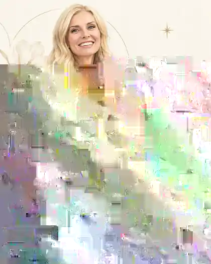
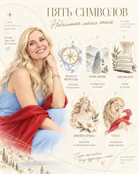
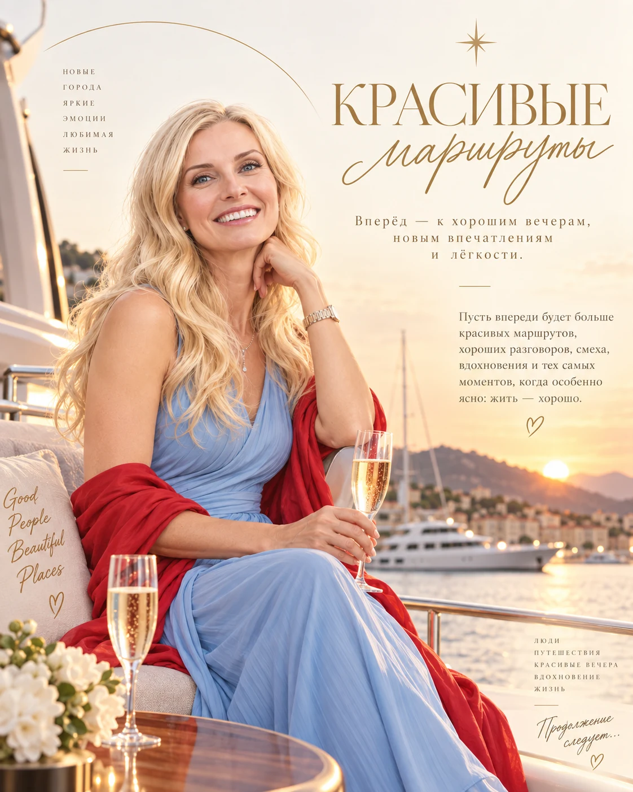

Вкус к жизни
Про свет, смыслы и искусство жить в своём ритме.
Небольшая карта нового десятилетия
Этот портрет собран по дате рождения в символической системе «Матрица судьбы». Это не предсказание и не инструкция «как должно быть», а способ посмотреть на характер и следующий жизненный этап через образы 22 арканов.
Для Ирины день рождения в этом году открывает новый цикл 50–60 лет. Его главная тема — Сила: не сила всё выдерживать, а спокойная внутренняя опора, умение выбирать своё и не расходовать себя на лишнее.

Пять оттенков внутренней красоты
Настоящий стиль всегда изнутри.
Остальное — лишь детали.
1Колесо Фортунылёгкость в движении жизни
- чувствовать, когда пришло время что-то менять;
- быть открытой новому без лишней тревоги;
- не держаться за вчерашнее, если впереди зовёт другое;
- доверять жизни, когда она предлагает новый маршрут.
2Отшельниквнутренняя ясность
- слышать себя, даже когда вокруг много шума;
- давать решениям созреть, а не принимать их на бегу;
- иногда отходить от суеты, чтобы почувствовать главное;
- выбирать в согласии с собой, а не с чужими ожиданиями.
3Иерофантзрелость и вкус
- опыт, который со временем становится достоинством;
- внутренняя культура — в словах, выборе и отношении к жизни;
- умение отличать поверхностное от действительно ценного;
- опираться не на моду, а на собственное чувство смысла.
4Императрицакрасота как состояние
- естественная женственность без усилия;
- делать пространство вокруг теплее и красивее;
- замечать то, что радует глаз, душу и сердце;
- создавать атмосферу, в которой хочется жить.
5Силаспокойная уверенность
- внутренняя устойчивость без жёсткости;
- не доказывать, а просто быть собой;
- мягко, но ясно обозначать границы;
- сохранять достоинство без лишних слов.

Лёгкие правила нового сезона
Стильно. Спокойно. Со вкусом.
Выбирать то, что действительно откликается
Не только то, что правильно или удобно, — но и то, в чём есть внутреннее согласие.
Не откладывать то, что наполняет жизнь
Хорошие вечера, красивые места, интересные встречи и радость не стоит оставлять «на потом».
Оставлять место тишине
Иногда самый точный ответ приходит не в суете, а в паузе. Тишина помогает услышать собственную интонацию.
Не оставаться там, где душе тесно
Даже если когда-то это казалось правильным. Даже если так удобнее другим.
Идти туда, где больше жизни
К новым впечатлениям, красивым маршрутам, глубоким разговорам и тому, что делает мир шире.

Пусть рядом будут люди, с которыми легко быть собой.
Пусть будет место для путешествий, красивых вечеров, новых впечатлений и тех случайных поворотов, которые потом оказываются самыми важными.
Пусть будет достаточно тишины, чтобы слышать себя. И достаточно смелости, чтобы идти туда, где по-настоящему интересно.
Ольга Абрамова